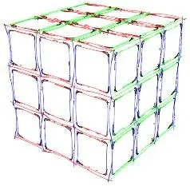

Rubik's Cube by Logic

Welcome!
This simple website is dedicated to those who want to unlock the "secrets" of solving the Rubik's Cube without relying on memorizing move sequences (no algorithms!). The Rubik's Cube, also known as the "magic cube" in some countries, as well as other similar puzzles, can be solved purely through logical reasoning. There is no need to memorize endless and seemingly meaningless sequences of moves.
The guides presented here serve as pathways to help you discover your own understanding and methods for solving these amazing puzzles. By developing a solid grasp of logic, you will always be able to solve them, even if a significant amount of time has passed since your last encounter with the cubes.
Important note: This website is not solely focused on speedcubing, also known as speedsolving. It does not favor one particular solving method over another. The ability to memorize algorithms and solve the cube rapidly in just a few seconds is truly impressive! If this is your interest, this website can still be beneficial to you. Understanding the fundamental "laws" of the cube and how it operates will aid you in the process of memorization.
Feel free to explore the guides and resources available here to embark on your Rubik's Cube-solving journey through logical thinking.